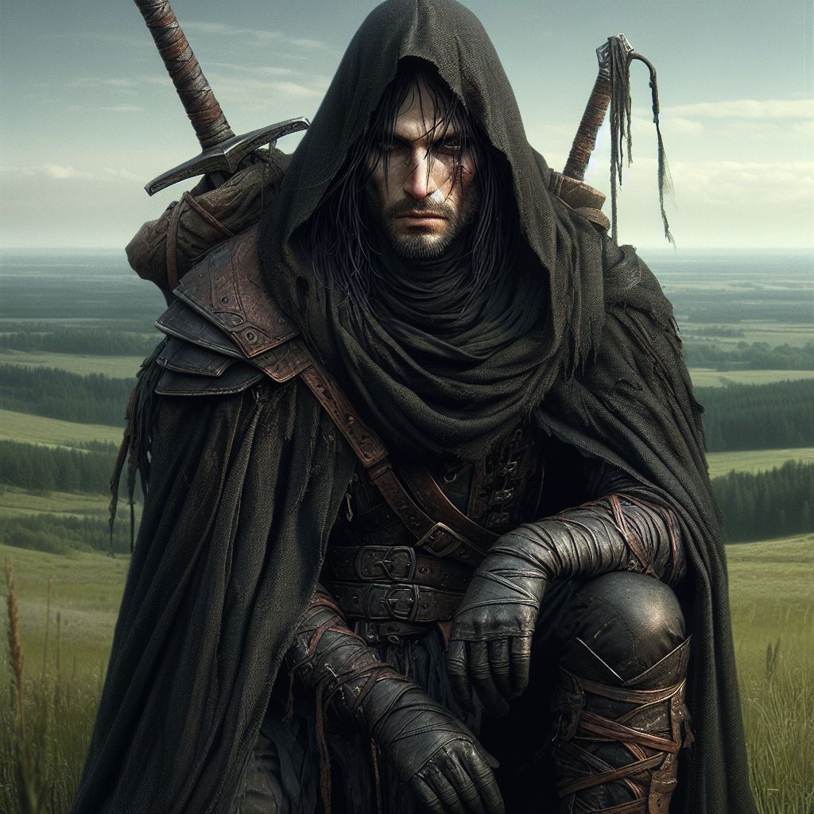
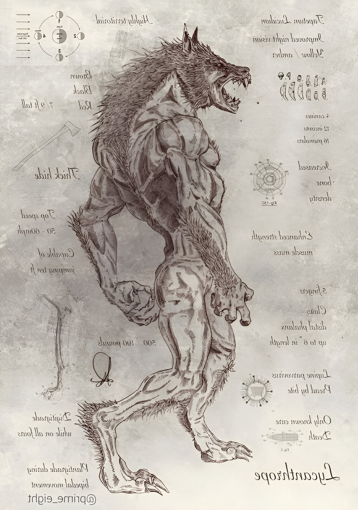
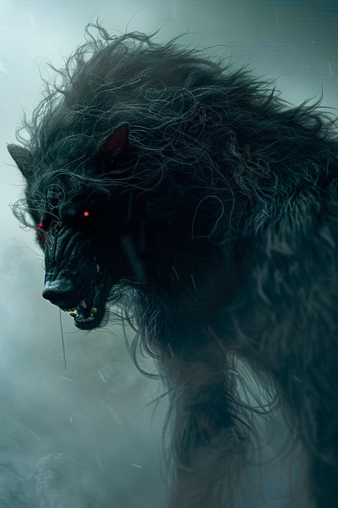

Aqueles que foram nomeados malditos
Os Lycans são um grupo de homens que serviram de cobais para os experimentos do odioso Morbus Vanderbrook. Tais homens carregam a maldição da licantropia e vivem em uma comunidade isolada — criada por eles mesmos — por conta disso.

História
Como tudo se originou
A linhagem Vanderbrook carrega uma mancha negra em sua história. Séculos atrás, a família se envolveu em uma ordem secreta, fundada e liderada pelo Primordial Midnatt, o Senhor da Noite e Deus do Sol Negro. A ordem dedicava-se ao estudo das sombras e dos segredos da magia negra, uma força temida por todos. No entanto, os membros da ordem — incluindo o próprio Midnatt — sucumbiram à corrupção ao absorver o Néctar Escuro em seus corpos. Certo dia, a ordem foi descoberta, e com isso, rapidamente desfeita, seus membros caçados e queimados em fogueiras, enquanto Midnatt foi destruído pelos outros Primordiais, que consideraram suas ações uma blasfêmia contra a Luz. Os poucos Vanderbrooks sobreviventes fugiram e passaram a viver como ratos, escondidos nas sombras. Morbus nasceu no reino de Lórgrid, o reino dos lobos, onde tais animais viviam em abundância e por conta disso se tornaram o simbolo do reino, sínonimo de força, inteligência e destreza. Fora filho de uma prostituta que o desprezava desde antes do nascimento. Durante seus sete primeiros anos de vida, ele testemunhou a dura realidade de sua mãe, que frequentemente o expulsava, chamando-o de "carrapato". Até que um dia, após a visita de um "amigo" de sua mãe, Morbus a encontrou morta em seu quarto, com marcas de estrangulamento no pescoço. Desde então, ele viveu sozinho, enfrentando a fome e o frio, mas nunca o medo. Aos treze anos, Morbus foi abordado por um homem alto, de cabelos brancos e trajes finos. Ele revelou ser seu tio-avô e lhe contou sobre sua verdadeira origem, pertencente à linhagem dos Vanderbrook. Ofereceu moradia, comida e algo mais, contanto que Morbus o acompanhasse. Sem hesitar, o jovem aceitou e partiu com seu recém-descoberto parente em uma carruagem. Após horas de viagem, Morbus chegou a uma gigantesca mansão cercada por grades de ferro negro. Durante o caminho, seu tio-avô lhe contou sobre a linhagem dos Vanderbrook e sobre o poder oculto que carregavam — um poder tão sombrio que nem os deuses ousavam tocar.
O homem revelou que uma essência sombria corria pelas veias de Morbus, a herança de seus antepassados que macularam seus corpos, e que ele estava disposto a ensiná-lo a dominá-la, entretanto, também ensinaria o dominio básico do combate com espadas, para que Morbus não dependesse completamente de seus poderes. Determinado, Morbus aceitou o treinamento e dedicou sua vida ao estudo de seus poderes. Anos se passaram, e Morbus tornou-se um homem culto e erudito, graças às longas horas de leitura na vasta biblioteca de seu tio-avô, além de ágil e habilidoso na arte da espada. Contudo, algo mais perturbador residia em seu interior. Ele era frio e distante das emoções humanas. Em uma de suas leituras, encontrou as ilustrações de Johan Túk, um macabro artista que empalhava corpos humanos, unindo-os com partes de animais. Fascinado por essa ideia, Morbus iniciou seus próprios experimentos necrológicos, fundindo corpos humanos com animais por meio de sua magia sombria. Os rumores sobre suas práticas logo se espalharam. Viajantes e moradores das redondezas começaram a avistar Morbus mexendo com cadáveres, sempre envolto em seu manto negro, o que lhe rendeu o temido apelido de Carniçeiro Negro.
Assim como o vento, os boatos de um suposto bruxo manipulador das trevas espalharam-se rapidamente até chegarem aos ouvidos do lorde Thírion Ardontt, governante de Lórgrid. O devoto da luz repudiou o que ouviu e colocou a cabeça do misterioso Carniçeiro a prêmio. Com isso, caçadores de recompensas partiram em busca de Morbus. Nos primeiros encontros, ele acreditava estar lidando com fanáticos extremistas, avessos a qualquer ligação com as sombras. Morbus matou todos que cruzaram seu caminho, achando conveniente que tentassem matá-lo, pois assim só precisava se defender e ainda obtinha corpos suficientes para seus experimentos nefastos. Porém, o número de caçadores aumentava. Certo dia, enquanto vasculhava o corpo de mais um oponente, encontrou um papel dobrado no bolso do homem. Ao analisá-lo, percebeu que era um anúncio da recompensa, uma quantia considerável prometida por sua cabeça. Nesse mesmo dia, ao retornar para a mansão, o que encontrou foi uma visão infernal: chamas devoravam a antiga mansão. Morbus sentiu um choque, seguido por uma raiva que há tempos não experimentava. Aproximando-se lentamente do local em chamas, avistou um corpo caído próximo às grades de ferro. Era seu tio-avô, espancado e esfaqueado. Não havia pegadas em fuga, indicando que seus assassinos queimaram junto com a construção. Nesse momento soube que ao menos seu tio não havia sido morto sem lutar. Agora, Morbus carregava sozinho toda a história e o poder dos Vanderbrook. Compreendeu que, muito possivelmente, era o único sobrevivente da linhagem. Decidiu que não poderia morrer tão facilmente. Iniciou então uma vida mergulhada nas sombras, tornando-se um andarilho e nômade, abrigando-se em florestas e cavernas a cada noite. Tornou-se quase uma lenda em todo o reino. Com o tempo, a maioria dos caçadores desistiu de rastreá-lo, pois era muito difícil localizá-lo e aqueles que o encontravam nunca retornavam com vida. Nesses tempos, Morbus acompanhou de perto muitas vezes os lobos de Lórgrid e encantou-se com os animais, desenvolvendo um certo tipo de fascínio e fixação em sua mente, chegando até a mimetizar — de uma forma estranha —alguns comportamentos e estratégias que observava nos canídios. Após quinze anos vivendo dessa forma, durante uma de suas caminhadas, Morbus encontrou uma pequena vila chamada Mohen, no sopé de uma montanha à margem de um rio. Os moradores eram simples pescadores, que jamais haviam ouvido falar do Carniçeiro Negro e tampouco conheciam a recompensa por sua captura, que já havia triplicado.
Morbus achou o lugar tranquilo e pacífico, além de remoto e relativamente escondido, decidindo se estabelecer ali por perto. Com o tempo, Morbus criou um vínculo de amizade com os residentes, compartilhando seus conhecimentos gerais e ensinando o povo de Mohen. Sua vida tornou-se mais tranquila e pacífica, afastando-o da existência bestial que levava. Depois de alguns meses, Morbus foi cativado por uma bela mulher da vila, chamada apenas de Libe. Os dois se aproximaram rapidamente, pois Libe era curiosa e muito mais inteligente que os outros moradores, o que surpreendeu e fascinou Morbus. A amizade logo cedeu espaço ao romance. Morbus, então, revelou tudo a Libe: o passado de sua família, as trevas que residiam dentro dele e sua capacidade de manipular sombras. Contou sobre sua mãe e a infância difícil, sobre o pai que nunca conheceu e a tragédia que atingiu seu tio. Libe aceitou toda sua bagagem, ficando ainda mais entusiasmada com ele. Algum tempo depois, Morbus a pediu em casamento, e a vila inteira comemorou. Morbus e Libe se mudaram para uma pequena casa nos arredores da vila. Algumas semanas depois, Libe descobriu que estava grávida, e o casal celebrou. Morbus dedicou-se a escrever manuscritos sobre tudo o que havia aprendido acerca dos Vanderbrook e da magia negra, com o objetivo de transcrever todo o conhecimento perdido de seu tio e ensiná-lo à criança que estava por vir. Ao final da gestação, Libe deu à luz a um menino, a quem deram o nome de Sefurius.
Quando o filho de Libe e Morbus completou três anos, Morbus começou a se isolar cada vez mais em seu escritório, como se a tinta usada para escrever fosse o ar que respirava e as páginas sua única fonte de sustento. Libe, percebendo a crescente ausência e a mudança repentina no comportamento de Morbus, tentou convencê-lo a passar mais tempo com ela e com o filho, mas foi em vão. Morbus parecia outra pessoa. Libe desconhecia a verdadeira fama de Morbus como o Carniceiro, e tampouco imaginava que ele ainda realizava experimentos bizarros, baseados nas ideias distorcidas de Johan Túk. A verdade era que Morbus ainda fundia humanos e animais em suas criações macabras, e agora focava em utilizar apenas lobos em suas fusões de cadáveres. Em casa, ele fazia inúmeras anotações e cálculos sobre o assunto, e quando não estava, saía sorrateiramente para pôr em prática tudo o que vinha registrando. Certo dia, quando Morbus estava fora, Libe decidiu entrar em seu escritório. Deparou-se com pilhas de páginas sobre assuntos obscuros que ela jamais entenderia. No entanto, algo chamou sua atenção: um caderno preto dentro da gaveta da escrivaninha de carvalho. Folheando-o, Libe percebeu que estava lendo um diário — os pensamentos mais íntimos de Morbus. "Qual será a impressão que ele teve sobre mim?" pensou, se referindo ao início de seu relacionamento. Então, um choque percorreu seu corpo, e ela quase pôde ouvir seu coração se partindo. O plano de Morbus, desde o princípio, era conseguir um herdeiro para manter a linhagem dos Vanderbrook viva. Ele escreveu detalhadamente sobre como foi fácil manipular Libe para atingir seu objetivo. Tudo não passava de um plano calculado. Enquanto lia, lágrimas escorriam pelo rosto de Libe, que, mesmo devastada, não conseguia parar de ler. Eventualmente, ela chegou às páginas que detalhavam seus experimentos e ficou enojada com os termos e as ideias ali descritas. Libe não conseguiu acreditar no que estava lendo e, incapaz de continuar, guardou o caderno de volta na gaveta, fingindo que nada daquilo era real. A partir desse dia, Libe dedicou todo o seu amor ao filho, Sefurius, determinada a garantir que ele jamais se tornasse igual ao pai. Com o tempo, a relação entre Morbus e Libe tornou-se frágil, como uma teia de aranha: Libe escondia o fato de saber a verdade, enquanto Morbus acreditava que suas manipulações permaneciam ocultas.
Apesar de seu comportamento distante, Morbus começou a ensinar Sefurius, sendo rígido e exigente, tanto nos estudos quanto na manipulação do poder sombrio — embora o jovem ainda não tivesse despertado suas habilidades. Enquanto isso, Libe, amorosa e descontraída, procurava equilibrar a influência de Morbus sobre o filho. Quando Sefurius completou doze anos, no mês de seu aniversário, o grande estopim aconteceu. O prelúdio de uma guerra se aproximava. Os moradores da vila bateram à porta de Morbus, alertando-o sobre uma iminente invasão. As terras de Lórgrid estavam em perigo, pois exércitos do norte haviam atravessado a fronteira e já dizimado e tomado várias cidades do reino. Libe ficou profundamente preocupada com a segurança de Sefurius, temendo que os exércitos do norte eventualmente encontrassem Mohen. Contudo, Morbus a tranquilizou, garantindo que seria improvável que um exército tão grande passasse por ali. Alguns dias depois, Libe notou uma inquietação crescente em Morbus. Até que, certa noite, ele a acordou, dizendo que tinha um plano para acabar com a guerra e, ao mesmo tempo, limpar o nome dos Vanderbrook, manchado pelo passado. Ele revelou que pretendia viajar até a capital do reino e fazer ao lorde Thírion uma proposta irrecusável. Libe implorou para que ele ficasse, temendo pela segurança do filho, mas Morbus estava decidido — seu maior objetivo era restaurar a honra dos Vanderbrook. Na manhã seguinte, Morbus se despediu da família, conseguiu um cavalo na vila e partiu rumo à capital, uma viagem que demoraria alguns dias. Ao chegar, deparou-se com uma multidão de refugiados acampados do lado de fora da grande cidadela murada. Perguntou a um velho sentado no chão como estavam lidando com as entradas, e o homem revelou que os portões da cidade estavam fechados devido à superlotação. Todos os sobreviventes dos ataques haviam buscado refúgio nas portas do lorde Thírion.

Morbus percebeu que não conseguiria entrar pela maneira convencional. Usando sua experiência, encontrou um caminho alternativo para dentro da cidade e conseguiu se esgueirar pelos telhados até chegar às portas do salão real. Lá, ele se rendeu aos guardas, declarando ser o Carniceiro Negro e afirmando que ajudaria o lorde a vencer a guerra. Levado à presença de Thírion Ardontt, o lorde o encarou com desprezo e descrença. Após todos esses anos, o temido bruxo manipulador das trevas estava ali, diante de seus olhos, pronto para ser executado. "Qual é o seu nome?" perguntou o lorde, e Morbus respondeu: "Morbus Vanderbrook." Um burburinho irrompeu no salão. O lorde ordenou silêncio e, ao entender a conexão, disse que isso explicava muita coisa. Por fim, Thírion pediu que Morbus lhe desse um bom motivo para não matá-lo. Morbus revelou então seu plano: ele poderia fornecer ao lorde soldados tão poderosos que venceriam qualquer guerra. Usaria sua magia para conceder aos guerreiros de Lórgrid um vigor inesgotável, tornando-os incansáveis e indestrutíveis. Em troca, Morbus exigia que o nome da família Vanderbrook fosse limpo e que a recompensa sobre sua cabeça fosse revogada. Desesperado diante da situação crítica, o lorde aceitou o trato. Morbus explicou que precisaria de uma sala para conduzir suas operações e algumas cobaias. Embora inicialmente relutante, Thírion cedeu às necessidades do bruxo, reunindo voluntários. Além disso, Morbus pediu que alguns homens trouxessem lobos vivos. Surpreso, Thírion indagou, "Lobos?" ao que Morbus confirmou, "Sim, lobos". Assim se iniciou uma sessão interminável de horror, onde Morbus unia os corpos dos soldados aos dos lobos, formando uma criatura única. Era a primeira vez que Morbus aplicava esse tipo de experimento em seres vivos, e o procedimento se revelou extremamente doloroso e desumano. A fusão alterava a estrutura óssea e fortalecia os músculos de forma agonizante, afetando tanto o corpo quanto a mente dos soldados. O processo foi rapidamente transferido para o subterrâneo do palácio, para que os gritos de dor, loucura e desespero fossem abafados pelas profundezas de pedra. Os primeiros experimentos resultaram em mortes horríveis, desencorajando os soldados, ao ponto de serem levados à força para a sala de experimentos.
No entanto, após diversos fracassos, os primeiros resultados surgiram, com soldados transformados permanentemente em bestas horrendas que lembravam lobos humanóides. Algumas variações atingiram até três metros de altura, com mentes completamente perdidas, movidas apenas por um instinto selvagem de matar. Essas aberrações mostraram-se indestrutíveis, com uma pele resistente e uma regeneração acelerada, mas devido ao perigo que representavam, foram trancadas nas profundezas das masmorras. Apesar dos fracassos, Morbus se divertia com seus experimentos, chegando a gargalhar em certas ocasiões, para horror dos guardas que observavam à distância. Entretanto, enquanto Morbus continuava seus experimentos, o exército do norte avançava, e Thírion exigiu que o bruxo replicasse seus resultados em todos os soldados restantes. Relutante, frustrado por não poder aperfeiçoar sua criação, Morbus cumpriu sua parte do acordo, criando um exército de lobisomens. Com um total de quatrocentos homens transformados, esses monstros enfrentaram as forças do norte, um exército de cinco mil bárbaros implacáveis. Quando os soldados de Thírion se apunhalaram no coração e se transformaram em lobisomens, o terror se instalou entre os nortistas. A batalha foi brutal, os lobisomens devastaram o exército inimigo, deixando o campo de batalha manchado de sangue e corpos mutilados. Ao regressarem à forma humana, os lobisomens caíam exaustos, mas quase ilesos. Vitorioso, Thírion recebeu a notícia com um sorriso incrédulo, mas rapidamente ordenou que todos os soldados transformados fossem presos nas masmorras, junto aos fracassos do experimento. Em relação a Morbus, ele decretou sua execução, traindo o acordo feito. Enfurecido, Morbus matou os guardas que tentaram capturá-lo e seguiu em direção ao palácio, eliminando todos que cruzaram seu caminho até confrontar Thírion. "VOCÊ NÃO TEM HONRA?!" gritou Morbus, antes de ser atacado pelos guerreiros da corte. Encurralado, Morbus recuou para as masmorras e libertou todos os lobisomens. O caos tomou conta da cidade. Edifícios foram destruídos, inocentes morreram, e os lobisomens fugiram para longe da civilização, deixando a cidade em ruínas. Ao ver sua cidade em chamas, Thírion amaldiçoou Morbus, gritando: "AMALDIÇOADO SEJA!! MORBUS VANDERBROOK!". Em resposta, Morbus lançou uma maldição sobre a linhagem de Thírion, prometendo que seus descendentes nasceriam fracos ou mortos.
Quando Morbus retornou a Mohen, o que encontrou foi devastador. A vila estava em ruínas, com portas arrombadas e casas saqueadas. O cenário era de silêncio fúnebre, apenas quebrado pelo som de moscas rondando corpos já em decomposição. Morbus caminhou lentamente pela vila, cada passo imerso em um misto de frieza e expectativa, tentando manter viva a esperança de que sua família pudesse ter escapado. Talvez, por estar mais isolada, sua casa tivesse sido poupada. Ao chegar, encontrou a porta de sua casa arrombada. Ele a empurrou lentamente, e o cheiro nauseante do interior o envolveu. Dentro, a cena que viu foi fria e desoladora: o corpo de Libe estava jogado sobre a mesa quebrada. Mesmo diante dessa visão, Morbus permaneceu inexpressivo, com o coração endurecido e incapaz de sentir a perda de sua esposa, como se ver Libe morta em sua frente não o abalasse ou não tivesse importância. Então, ouviu um som vindo do quarto. Movendo-se em direção ao barulho, ele encontrou a mão de Sefurius se estendendo debaixo de uma tábua solta no chão. Morbus rapidamente resgatou seu filho, observando o quão magro e debilitado ele estava, além de estar fedendo a fezes e urina. O tempo que Morbus passara com Lorde Thírion tinha lhe feito perder a noção dos dias, e seu filho, deixado para trás, sofrera as consequências. Ao segurar Sefurius nos braços, o garoto tentou, em vão, tocar o rosto do pai antes de perder a consciência devido à fraqueza. Morbus, impassível, carregou seu filho dali. Quando Sefurius acordou, encontrou-se acorrentado em um lugar escuro, sem ideia de onde estava. À medida que suas memórias voltavam, o desespero se instalava, até que Morbus emergiu das sombras. Ao reconhecer o pai, Sefurius o culpou imediatamente pela morte de sua mãe, dizendo que, se ele estivesse lá, Libe ainda estaria viva. Morbus, frio e distante, respondeu que o mais importante era Sefurius estar vivo, pois ele era o herdeiro do sangue negro dos Vanderbrook. Sefurius, porém, furioso, rejeitou o legado, dizendo que nada mais importava agora que sua mãe estava morta. Ele revelou odiar Morbus e afirmou que nunca mais seria capaz de amá-lo. Morbus então disse: "Contenha sua raiva, filho. Use-a como alimento no futuro, pois agora, eu vou te transformar na maior das armas." Assim, começou uma série interminável de experimentos com Sefurius. Morbus alimentou o garoto com magia negra, intensificando seus poderes sombrios e fundindo seu corpo com lobos, — retomando de onde havia sido interrompido com os soldados de Lórgrid — o que o submeteu a dores extremas e pavorosos sofrimentos, despedaçando sua mente ao longo dos anos. Por quase vinte anos, Sefurius foi mantido nesse tormento, sua mente foi fragmentada pela insanidade. Por fim, Morbus considerou sua criação perfeita e libertou Sefurius das correntes. Mas, para sua surpresa, mesmo tendo a mente completamente quebrada, seu filho, agora uma monstruosidade de poder sombrio, o atacou. Assumindo a forma de um lobisomem feito de sombras, Sefurius investiu violentamente contra Morbus, que usou sua magia para escapar. A perseguição se estendeu para além do antro sombrio onde Morbus havia mantido Sefurius por duas décadas. Morbus conseguiu fugir, mas Sefurius prometeu caçá-lo até o inferno, se necessário. Assim, pai e filho estraram em um ciclo de ódio e destruição, prontos para se enfrentarem como inimigos mortais, em uma luta sem fim entre caçador e caçado.